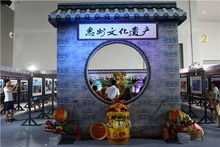
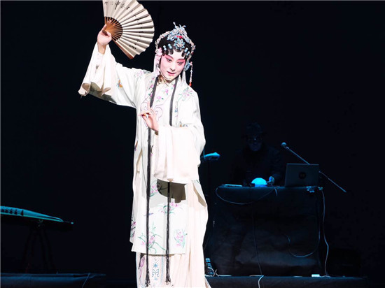

惠州，位于广东省中南部东江之滨，珠江三角洲东北端，南临南海大亚湾，毗邻深圳、香港，北连河源市，东接汕尾市，西邻东莞市和广州市，是珠江三角洲地区中心城市之一。辖惠城区、惠阳区、惠东县、博罗县、龙门县等2区3县，并设有两个国家级开发区：大亚湾经济技术开发区、仲恺高新技术产业开发区，属珠三角经济区。
惠州是国家历史文化名城，在隋唐已是“粤东重镇”，一直是东江流域政治、经济、军事、文化中心和商品集散地，素有“岭南名郡”、“粤东门户”、“半城山色半城湖”之誉。
惠州是客家人的重要聚居地和集散地之一，旅居海外华人华侨、港澳台同胞居客家四州之首，被称为客家侨都。
2015年12月10日，在由中国城市竞争力研究会举办的第五届香港论坛上，惠州连续第6次荣获“中国最具幸福感城市”、第4次荣获“中国十佳宜居城市”、第3次荣获“中国最美丽城市”等称号。
阳光充足，气候温和，属亚热带季风气候区。
广东三大水系之一的东江及其支流西枝江横贯境内，境内水库容量超过16亿立方米，是供给香港、深圳、广州等地的主要水源。
惠州港为国家一级口岸，水路距香港仅47海里。惠州海岸线长223公里，水深港湾多，具有建设年吞吐量一亿吨以上大港口和国际港口城市的条件。
惠州市境内海拔1000米以上的山有13座（最高的莲花山海拔1336米），有旅游特色奇山16座。
在市境内，有大大小小湖泊、水库130多个，其中主要有西湖、白盆珠水库、天堂山水库、显冈水库、花树下水库、角洞水库、红花湖等。
2016年5月，惠州市被国家知识产权局评为第四批国家知识产权示范城市。同年，惠州市被列为第一批国家新型城镇化综合试点地区
从唐到清末1000多年间，有430多位中国名人客寓或履临惠州，留下了96处遗址和2100多件文物。孕育了叶挺、廖仲恺、邓演达、叶亚来等杰出人士；惠州是中国近代抗争史的前沿阵地，曾建立华南抗日战争的主力部队—东江纵队。
惠州市旅游资源丰富，景点类型多，密集程度高，容量大。
惠州西湖是以素雅幽深的山水为特征、以历史文化为底蕴、以休闲和观光为主要功能的国家级风景名胜区和国家AAAA级旅游景。林木茂盛，继承了岭南独树一帜的自然景观特征，与杭州西湖的烟雨江南印象相比，显得更加清爽直白、端庄素雅， 因而又有“浓抹杭州惠淡妆”之说。 惠州西湖幽深曲折，周围青山环绕，亭台水榭遍布其中，景色万千。 湖区很大，非常适合游船，无论是划船还是电动船，都能找到相应的乐趣。 这里是赏荷的好去处，无论是荷花亭和丰渚园，都可以看到大片荷花。
罗浮山景区规划总面积260平方公里，内有大小山峰432座，飞瀑名泉980多处，洞天奇景18处，石室幽岩72个。罗浮山不仅自然风光雄伟秀丽，而且文化底蕴深厚，名胜古迹及宗教影响使历代名人学士慕名而来，游览、吟咏、题词、刻石，摩涯石刻和碑碣比比皆是。奇峰怪石、名泉飞瀑、神奇云烟、洞天奇景是罗浮山四大旅游特色。
南昆山主要的自然景观有石河奇观、川龙瀑布、九重远眺、观音潭、仙霞瀑布、蛇松、神鹰石等十几处，主要以清幽山林、怪石、流泉飞瀑为特色 ，另外这里的野味、观音菜、山坑螺、山水豆腐更是山上饮食一绝。再加上这里地势高、有重山围绕，冬暖夏凉，年平均温度只有二十三度，是消闲度假、疗养避暑的胜地。
香溪堡旅游区独特的历史文化遗产和建筑风格，有“华南第一古堡”之称；大自然的鬼斧神工，造就了香溪堡沿河两岸的奇林秀水，故又有“广东小桂林”之美誉。在这里，翠竹成林，您可乘竹筏轻舟，一边欣赏两岸“迷人的景致”、 “河中抛网捕鱼”，一边参与“竹笼取宝”等饶有兴味的水上活动，兴之所至还可以用“水枪”来一场痛快淋漓的“水仗”，此情此景会令您耳目一新，心旷神怡；在这里，独具岭南建筑艺术的“古码头、五宅古堡、五宅第、正街”等，这些有着近500年历史的古堡和墙体斑斑驳驳但保持完整的古建筑群，其岭南文化建筑艺术遗风、久经沧桑的历史、深厚的文化积淀、浓郁的古堡风情，给人留下时光倒流的回味和联想的空间。
著名书法家陈荣琚用数字把巽寮景观归纳为：一堤二阁三奇四庙五宝六洞七山八湾十八景九九洲
巽寮滨海旅游度假区，位于广东省惠东县西南部，区域总面积105平方公里，三面环山，一面临海，拥有27公里的海岸线，“水奇清、沙奇白、石奇美”，滨海沙滩绵延数千米，海底平坦坚实，海水清澈碧绿，沿岸礁石奇美，素有“中国的马尔代夫”之美誉。多年来，巽寮以秀美宜人的亚热带风光，吸引了国内外数以百万计的游客前来观光旅游。
这里沙滩平缓，沙质洁白，水质清澈，中间夹一弯银色月牙状沙滩，两边各是一条蜿蜒数里的绿色防护带，宛如莲花仙子广舒云袖。南临茫茫人海，碧水共长天一色；西望百岛丽影，群鸟与落霞齐飞；东观巽寮日出，云蒸霞蔚；北依铁炉山峰，层峦叠嶂，山光水色尽收眼底。
惠州是广东省的历史文化名城，在古代即有岭南名郡、粤东门户之称。
东坡文化，是指苏东坡寓惠文化。即苏东坡在惠期间的社会文化活动、思想文化内涵及其所产生的巨大影响。
客家人从粤东、闽西、赣南迁到惠州不过四百多年历史，但惠州客家人立足传统，博采众长，创造出了富有地域特色的客家文化。
汉剧与粤剧、潮剧并列为广东三大剧种。汉剧别称外江剧，已有300多年的历史，素有“南国牡丹”的美称。